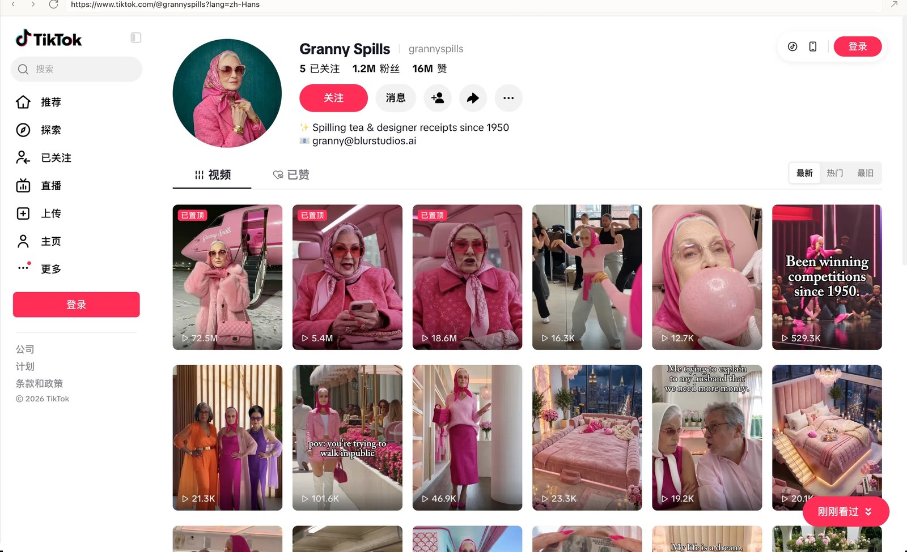
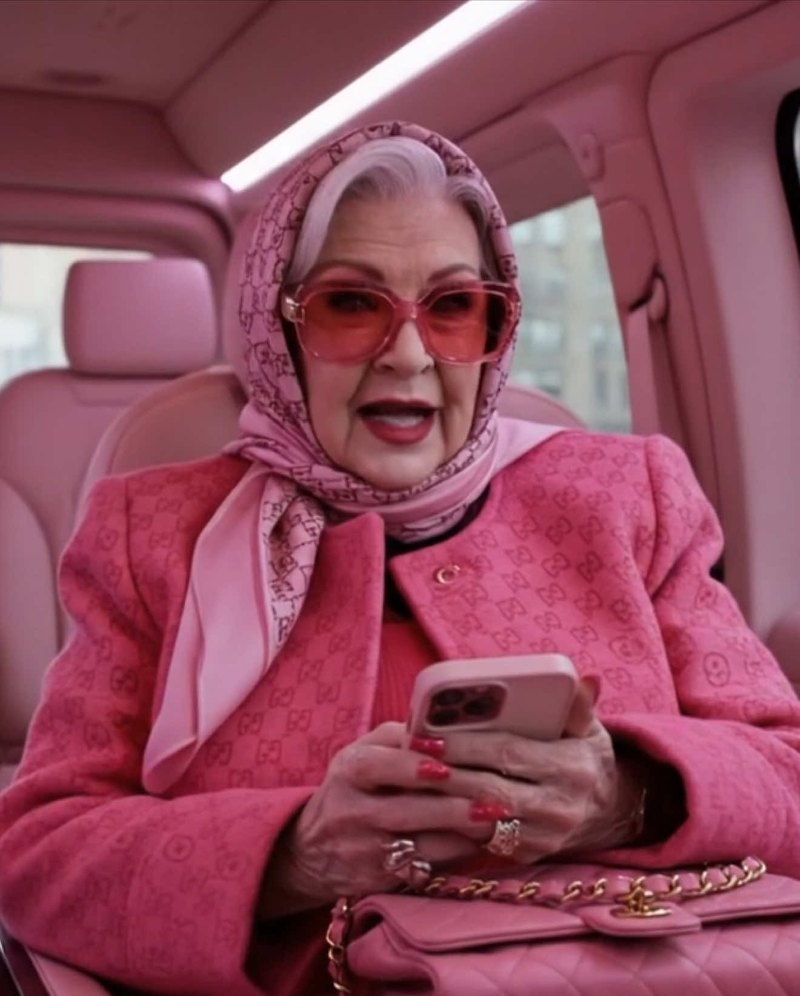
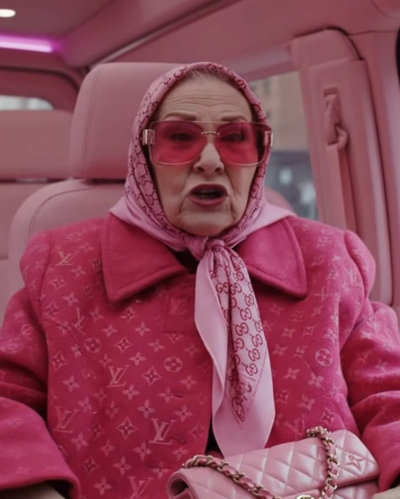
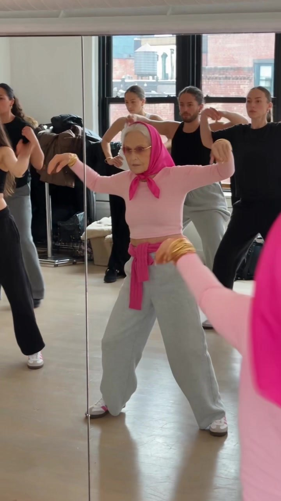

海外虚拟 IP / 首批方案
先做一个“白人 AI 奶奶”：Gigi Sterling
对标 Granny Spills；TikTok 主，IG 同步。
一句话：做一个 69 岁的白人 AI 奶奶——粉衣、毒舌、住粉色公寓、开粉色车，专门讲情感、时尚和“我这个年纪才明白的事”。
为什么是奶奶：年轻美女已经是红海；奶奶 + 粉色 + 毒舌，三个记忆点叠在一起，用户一眼记住，品牌也好记。
角色：Gigi Sterling，69 岁
平台：TikTok 主 / IG 同步
场景：粉色公寓 + 粉色车
先做 10 条测试

一、为什么选这个对标
对标：Granny Spills
TikTok 120 万粉 / 1600 万赞；IG 200 万粉 / 329 帖。
近一周发了 13 条，约每天 2 条；最高一条 7250 万播放。
数据抓取：2026-11-19。
她已经验证了什么
- 白人奶奶 + 粉色，视觉一眼记住。
- 毒舌/情感/豪门日常，内容可批量做。
- TikTok 和 IG 双平台都成立。
- 用户接受度高：AI 生成的脸 + 真实感场景，观众愿意看、愿意互动。
我们的版本
模仿她的形象、性格、身份特征和内容，做我们自己的 Gigi Sterling：69 岁、白人、粉衣、毒舌、有钱、护短。她的“豪门”我们照做：粉色公寓、粉色车、粉色私人飞机都上；AI 生成成本差不多，不用刻意回避大场面。
TikTok 主页与内容截图

TikTok 主页：120 万粉 / 1600 万赞；置顶 7250 万、540 万、1860 万播放。



二、角色卡
| 项 | 内容 |
|---|---|
| 名字 | Gigi Sterling |
| 年龄 | 69 岁（1957 年生；明年 70 岁生日） |
| 人设 | 有钱、毒舌、见过世面、护短；口头禅 “sweetie / honey / please” |
| 外形 | 美国白人女性；白发、粉衣、墨镜、红唇、名牌包 |
| 关系 | 一个固定“老公”捧哏；一个闺蜜团（后面再加） |
| 场景 | 粉色公寓 + 粉色车（先定这两个） |
| 平台 | TikTok 主；IG 同步；YouTube Shorts 复用 |
| 禁忌 | 政治/成人/医疗/金融；真人名人；年龄羞辱/性别攻击 |
三、内容怎么做
一条视频 = 一个场景 + 一句金句 + 一个大字幕；9:16、10-20 秒、近景，不铺垫。
| 类型 | 占比 | 公式 | 例子 |
|---|---|---|---|
| 豪门奶奶日常 | 30% | 一个夸张道具 + 一句凡尔赛 | “我的公寓是粉色的，车也是。” |
| 毒舌金句/POV | 25% | 一个场景 + 一句狠话 | “POV: 我走进房间，所有人都安静了。” |
| 情感/婚姻/老公 | 20% | 一句对话 + 一个反转 | “他说省点钱。我说，亲爱的，我们就是钱。” |
| 时尚/名媛/闺蜜 | 15% | 一套粉造型 + 一句点评 | “粉色不是颜色，是态度。” |
| 年轻反差 | 10% | 年轻动作 + 奶奶脸 | “69 岁，第一次上团课。” |
三条样片方向：
1. “My apartment is pink. My car is pink. My husband is... still adjusting.”
2. “POV: I walk into the room and everyone behaves.”
3. “He said we should save money. I said, ‘sweetie, we are the money.’”
四、需要领导支持
- 设备与环境：由 Monica 支持，包括手机、账号、Apple ID、邮箱、专线等设备采购。
- 内容制作：跃跃协助，我来辅助。
- 首批先做 1 个角色 + 10 条内容测试，不设产能、不押爆款。
- AI 工具、剪辑、英文文案、投流走公司现有资源。
目标不是一上来做爆款，而是先验证：这个奶奶有没有人看、品牌愿不愿意为这张脸付钱。